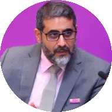
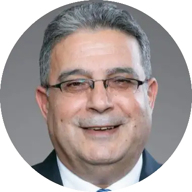
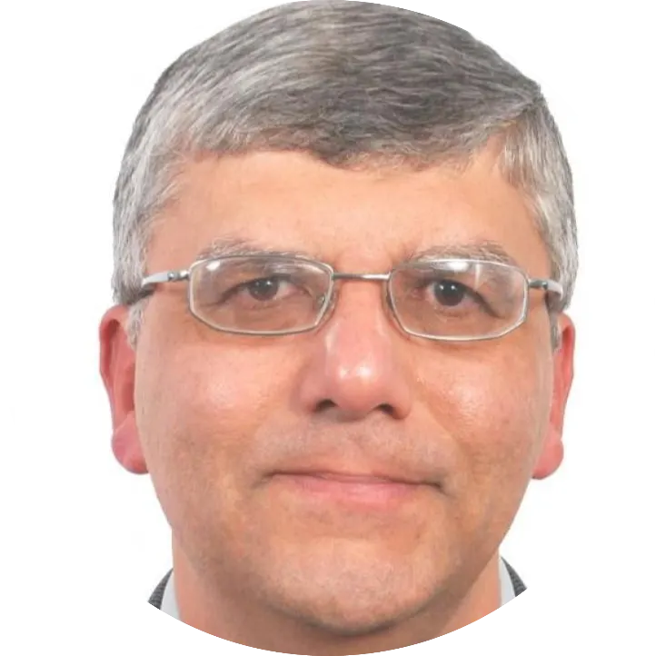
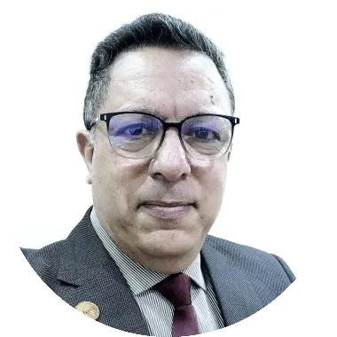
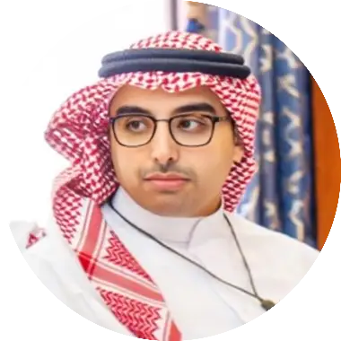

In this section, we introduce the distinguished members of our Committed Advisory, a group of influential leaders with extensive experience in research, innovation, and institutional development. Their outstanding careers and contributions in areas such as data analytics, academic rankings, educational standards, and global university leadership are instrumental in guiding our mission to recognize and promote academic excellence in the Arab world.
M’hamed el Aisati
— Founder
As VP of Analytical & Data Services at Elsevier, M’hamed el Aisati leads a team that looks after content and analytical services, supporting large research performance evaluation programs and rankings. Previously, he was VP of Funding, Content and Analytics. He is based in Amsterdam.
M’hamed joined Elsevier in 1998 and contributed to the development of the company’s first digital journals platform, which preceded ScienceDirect. In 2004, he helped launch Scopus. M’hamed was granted a master’s degree in computer sciences from the University of Amsterdam. He has published several papers in peer reviewed journals and holds two patents.
As VP of Analytical & Data Services at Elsevier, M’hamed el Aisati leads a team that looks after content and analytical services, supporting large research performance evaluation programs and rankings. Previously, he was VP of Funding, Content and Analytics. He is based in Amsterdam.
M’hamed joined Elsevier in 1998 and contributed to the development of the company’s first digital journals platform, which preceded ScienceDirect. In 2004, he helped launch Scopus. M’hamed was granted a master’s degree in computer sciences from the University of Amsterdam. He has published several papers in peer reviewed journals and holds two patents.

Prof. Habib Fardoun
— Founder
Dr. Habib Fardoun is the Principal Consultant at QS Ranking, Spain, and is recognized for his ability to enhance the performance and reputation of universities globally. He specializes in elevating academic standards and promoting excellence in research, teaching, reputation, presence, and internationalization. His expertise spans across key areas that influence institutional recognition and global positioning, including strategic analysis, performance benchmarking, and the development of impactful academic and research strategies. This comprehensive approach enables him to strengthen educational institutions and expand their international presence in alignment with global ranking and evaluation frameworks.
Previously, Fardoun served as the Director of the Observatory Center for Academic Standards and Excellence at King Abdulaziz University (2012-2022), Saudi Arabia, and has been an Executive Member of the IREG Observatory on Academic Ranking and Excellence since 2016. Dr Fardoun has a PhD and Master’s in Quality Higher Education Development, complemented by a BA in Computer Engineering from Universidad de Castilla-La Mancha.
Dr. Habib Fardoun is the Principal Consultant at QS Ranking, Spain, and is recognized for his ability to enhance the performance and reputation of universities globally. He specializes in elevating academic standards and promoting excellence in research, teaching, reputation, presence, and internationalization. His expertise spans across key areas that influence institutional recognition and global positioning, including strategic analysis, performance benchmarking, and the development of impactful academic and research strategies. This comprehensive approach enables him to strengthen educational institutions and expand their international presence in alignment with global ranking and evaluation frameworks.
Previously, Fardoun served as the Director of the Observatory Center for Academic Standards and Excellence at King Abdulaziz University (2012-2022), Saudi Arabia, and has been an Executive Member of the IREG Observatory on Academic Ranking and Excellence since 2016. Dr Fardoun has a PhD and Master’s in Quality Higher Education Development, complemented by a BA in Computer Engineering from Universidad de Castilla-La Mancha.

Prof. Ghassan Aouad
Dr. Ghassan Aouad is the Chancellor of Abu Dhabi University (ADU), with extensive experience in higher education leadership, research, and innovation. Before joining ADU, he served as President of Applied Science University in Bahrain and held leadership roles at University of Wollongong in Dubai (UOWD) and Gulf University for Science and Technology (GUST) in Kuwait.
Dr. Aouad earned his PhD in Construction Planning Systems from Loughborough University, UK, and previously served as Pro Vice Chancellor for Research and Innovation and Dean of the College of Science and Technology at University of Salford. He has published extensively, supervised numerous PhD students, secured significant research funding, and delivered keynote speeches globally.
He is a Fellow of Advance HE and the Chartered Institute of Building (CIOB) and has contributed to several professional organizations, including serving as President of CIOB. His leadership continues to drive academic excellence and institutional growth at Abu Dhabi University.
Dr. Ghassan Aouad is the Chancellor of Abu Dhabi University (ADU), with extensive experience in higher education leadership, research, and innovation. Before joining ADU, he served as President of Applied Science University in Bahrain and held leadership roles at University of Wollongong in Dubai (UOWD) and Gulf University for Science and Technology (GUST) in Kuwait.
Dr. Aouad earned his PhD in Construction Planning Systems from Loughborough University, UK, and previously served as Pro Vice Chancellor for Research and Innovation and Dean of the College of Science and Technology at University of Salford. He has published extensively, supervised numerous PhD students, secured significant research funding, and delivered keynote speeches globally.
He is a Fellow of Advance HE and the Chartered Institute of Building (CIOB) and has contributed to several professional organizations, including serving as President of CIOB. His leadership continues to drive academic excellence and institutional growth at Abu Dhabi University.

Prof. Amr Adly
President of Egypt-Japan University of Science and Technology (E-JUST)
Prof. Adly, received the Ph.D. degree in Electrical Engineering from the University of Maryland, USA. He worked as a Senior Magnetics Scientist at LDJ Electronics, USA and has been a faculty member in Cairo University Faculty of Engineering since 1994. During the summers of years 1996-2000, Prof. Adly worked as a Visiting Research Professor at the University of Maryland, USA. He also worked as a consultant to the UNESCO Cairo office and as an expert to the EU Commission where he participated in developing the RDI Program for Egypt.
He established and directed the R&D Division of the Egyptian Industrial Modernization Center (IMC) and was responsible for managing a 100 Million LE Fund to boost the national value-added of Egyptian SMEs. In the period 2010-2019 Prof. Adly served as Cairo University Faculty of Engineering Vice Dean, the Executive Director of the Science and Technology Development Fund (STDF), Cairo University Vice President for Graduate Studies and Research, and the Deputy Minister of Higher Education and Scientific Research.
He authored two books, published more than 135 reviewed papers, holds one U.S. patent, IEEE Fellow since 2010 and is currently the Editor-in-Chief of IEEE Transactions on Magnetics. Prof. Adly has been awarded the Presidential Egyptian First Class Medal of Science and Arts, the University of Maryland ECE Dept. Distinguished Alumni Award, the Egyptian State Appreciation, Excellence and Encouragement Prizes and the Shoman Foundation Arab Scientist Prize. Prof. Adly started his role as Egypt-Japan University of Science and Technology President in July 2022.
President of Egypt-Japan University of Science and Technology (E-JUST)
Prof. Adly, received the Ph.D. degree in Electrical Engineering from the University of Maryland, USA. He worked as a Senior Magnetics Scientist at LDJ Electronics, USA and has been a faculty member in Cairo University Faculty of Engineering since 1994. During the summers of years 1996-2000, Prof. Adly worked as a Visiting Research Professor at the University of Maryland, USA. He also worked as a consultant to the UNESCO Cairo office and as an expert to the EU Commission where he participated in developing the RDI Program for Egypt.
He established and directed the R&D Division of the Egyptian Industrial Modernization Center (IMC) and was responsible for managing a 100 Million LE Fund to boost the national value-added of Egyptian SMEs. In the period 2010-2019 Prof. Adly served as Cairo University Faculty of Engineering Vice Dean, the Executive Director of the Science and Technology Development Fund (STDF), Cairo University Vice President for Graduate Studies and Research, and the Deputy Minister of Higher Education and Scientific Research.
He authored two books, published more than 135 reviewed papers, holds one U.S. patent, IEEE Fellow since 2010 and is currently the Editor-in-Chief of IEEE Transactions on Magnetics. Prof. Adly has been awarded the Presidential Egyptian First Class Medal of Science and Arts, the University of Maryland ECE Dept. Distinguished Alumni Award, the Egyptian State Appreciation, Excellence and Encouragement Prizes and the Shoman Foundation Arab Scientist Prize. Prof. Adly started his role as Egypt-Japan University of Science and Technology President in July 2022.

Dr. Abdelmajid Benamara’s
Secretary General of the Federation of Arab Scientific Research Councils
Dr. Abdelmajid Benamara is a seasoned academic and leader in mechanical engineering with dual PhDs (Mechanical Engineering from ENIT, Tunisia, and Computer Science & Automation from UPHF, France). He also holds a Master’s in Mechanical Engineering and a Bachelor’s in Technical Science.
Over the years, he has held several high-level positions within Tunisia’s Ministry of Higher Education and Scientific Research, including Director General of Higher Education, Director of Scientific Research, and CEO of the National Higher Education Publishing Center. He served as Dean of the National Engineering School of Monastir and has also been the Tunisian representative in ALECSO’s commission on research and innovation.
As a Full Professor, Dr. Benamara has published more than 100 scientific papers, contributed to four books, presented over 200 conference papers, and supervised numerous master’s and doctoral theses. His international collaborations extend across Canada, France, and the United States. Fluent in Arabic, French, and English, he has strong leadership and intercultural skills. Additionally, his technical expertise includes CAD/CAM software (CATIA, SolidWorks, ANSYS) and programming (C++, JavaScript).
Secretary General of the Federation of Arab Scientific Research Councils
Dr. Abdelmajid Benamara is a seasoned academic and leader in mechanical engineering with dual PhDs (Mechanical Engineering from ENIT, Tunisia, and Computer Science & Automation from UPHF, France). He also holds a Master’s in Mechanical Engineering and a Bachelor’s in Technical Science.
Over the years, he has held several high-level positions within Tunisia’s Ministry of Higher Education and Scientific Research, including Director General of Higher Education, Director of Scientific Research, and CEO of the National Higher Education Publishing Center. He served as Dean of the National Engineering School of Monastir and has also been the Tunisian representative in ALECSO’s commission on research and innovation.
As a Full Professor, Dr. Benamara has published more than 100 scientific papers, contributed to four books, presented over 200 conference papers, and supervised numerous master’s and doctoral theses. His international collaborations extend across Canada, France, and the United States. Fluent in Arabic, French, and English, he has strong leadership and intercultural skills. Additionally, his technical expertise includes CAD/CAM software (CATIA, SolidWorks, ANSYS) and programming (C++, JavaScript).
Dr. Henda El Fekih
Dr. El Fekih is a distinguished full professor at the Ecole Nationale d’Ingénieurs de Tunis (ENIT), affiliated with the University of Tunis El Manar, Tunisia. She has been an integral part of the university since 1994, contributing over three decades of service in academia, research, and leadership.
Her research expertise lies in applied mathematics, with a particular focus on control theory, inverse problems, and numerical analysis. She is also well known for her work in scientometrics and science and technology indicators. Dr. El Fekih has co-authored numerous high-impact publications on topics such as Dirichlet boundary control problems, singular perturbation, and Lavrentiev regularization in data completion problems, earning recognition in the mathematical sciences community.
From 2011 to 2014, she served as Vice President of the University of Tunis El Manar, where she played a key role in academic leadership and institutional development. Her leadership extended beyond the university level, reflecting her commitment to advancing higher education in Tunisia.
In addition to her academic pursuits, Dr. El Fekih holds several professional affiliations. She is an active member of the Scientific Association of ENIT and serves on the National Liaison Committee for the UNESCO Chair in Mathematics and Development. Her involvement in these networks highlights her ongoing engagement in promoting mathematical research, education, and international cooperation.
Notably, she also bridges academia and industry through her role as a board member at Banque de Tunisie since 2012, demonstrating her strategic insight and commitment to applying academic expertise in broader societal and economic contexts.
Dr. Henda El Fekih's contributions exemplify a rare blend of scientific depth, academic leadership, and interdisciplinary impact, making her a leading figure in Tunisia’s academic and professional landscape.
Dr. El Fekih is a distinguished full professor at the Ecole Nationale d’Ingénieurs de Tunis (ENIT), affiliated with the University of Tunis El Manar, Tunisia. She has been an integral part of the university since 1994, contributing over three decades of service in academia, research, and leadership.
Her research expertise lies in applied mathematics, with a particular focus on control theory, inverse problems, and numerical analysis. She is also well known for her work in scientometrics and science and technology indicators. Dr. El Fekih has co-authored numerous high-impact publications on topics such as Dirichlet boundary control problems, singular perturbation, and Lavrentiev regularization in data completion problems, earning recognition in the mathematical sciences community.
From 2011 to 2014, she served as Vice President of the University of Tunis El Manar, where she played a key role in academic leadership and institutional development. Her leadership extended beyond the university level, reflecting her commitment to advancing higher education in Tunisia.
In addition to her academic pursuits, Dr. El Fekih holds several professional affiliations. She is an active member of the Scientific Association of ENIT and serves on the National Liaison Committee for the UNESCO Chair in Mathematics and Development. Her involvement in these networks highlights her ongoing engagement in promoting mathematical research, education, and international cooperation.
Notably, she also bridges academia and industry through her role as a board member at Banque de Tunisie since 2012, demonstrating her strategic insight and commitment to applying academic expertise in broader societal and economic contexts.
Dr. Henda El Fekih's contributions exemplify a rare blend of scientific depth, academic leadership, and interdisciplinary impact, making her a leading figure in Tunisia’s academic and professional landscape.

Dr. Mohammed S. Alqahtani
Vice Dean for Research and Innovation, Director of Central Labs – King Khalid University (KKU), Saudi Arabia
Dr. Mohammed S. Alqahtani is a pioneering Saudi academic and clinical leader in the fields of research strategy, medical physics, and advanced cancer care. He currently serves as Associate Professor and Vice Dean for Research and Innovation, Director of Central Labs at King Khalid University, where he has been instrumental in shaping the university’s research ecosystem and national innovation agenda.
With a Ph.D. in Medical Physics from the University of Leicester, Dr. Alqahtani’s academic contributions include the development and clinical evaluation of hybrid gamma imaging technologies for surgical oncology. His scholarly record includes over 200 indexed publications across nuclear medicine, radiological sciences, nanomaterials, and AI-enabled diagnostic imaging. He is also an active reviewer and editorial board member for several leading international journals.
At King Khalid University, Dr. Alqahtani leads the Central Labs mega-project valued at over SAR 171 million and played a central role in aligning the university’s research priorities with the Aseer Development Strategy, in collaboration with the Boston Consulting Group. Beyond academia, he is the Founder and Director of the Cure Oncology Center at Abha International Private Hospital, where he is introducing advanced theranostics and molecular imaging services to transform cancer care in the southern region of Saudi Arabia. He also holds an honorary visiting professorship at the University of Leicester and serves as a national consultant and evaluator of research and innovation initiatives.
Vice Dean for Research and Innovation, Director of Central Labs – King Khalid University (KKU), Saudi Arabia
Dr. Mohammed S. Alqahtani is a pioneering Saudi academic and clinical leader in the fields of research strategy, medical physics, and advanced cancer care. He currently serves as Associate Professor and Vice Dean for Research and Innovation, Director of Central Labs at King Khalid University, where he has been instrumental in shaping the university’s research ecosystem and national innovation agenda.
With a Ph.D. in Medical Physics from the University of Leicester, Dr. Alqahtani’s academic contributions include the development and clinical evaluation of hybrid gamma imaging technologies for surgical oncology. His scholarly record includes over 200 indexed publications across nuclear medicine, radiological sciences, nanomaterials, and AI-enabled diagnostic imaging. He is also an active reviewer and editorial board member for several leading international journals.
At King Khalid University, Dr. Alqahtani leads the Central Labs mega-project valued at over SAR 171 million and played a central role in aligning the university’s research priorities with the Aseer Development Strategy, in collaboration with the Boston Consulting Group. Beyond academia, he is the Founder and Director of the Cure Oncology Center at Abha International Private Hospital, where he is introducing advanced theranostics and molecular imaging services to transform cancer care in the southern region of Saudi Arabia. He also holds an honorary visiting professorship at the University of Leicester and serves as a national consultant and evaluator of research and innovation initiatives.